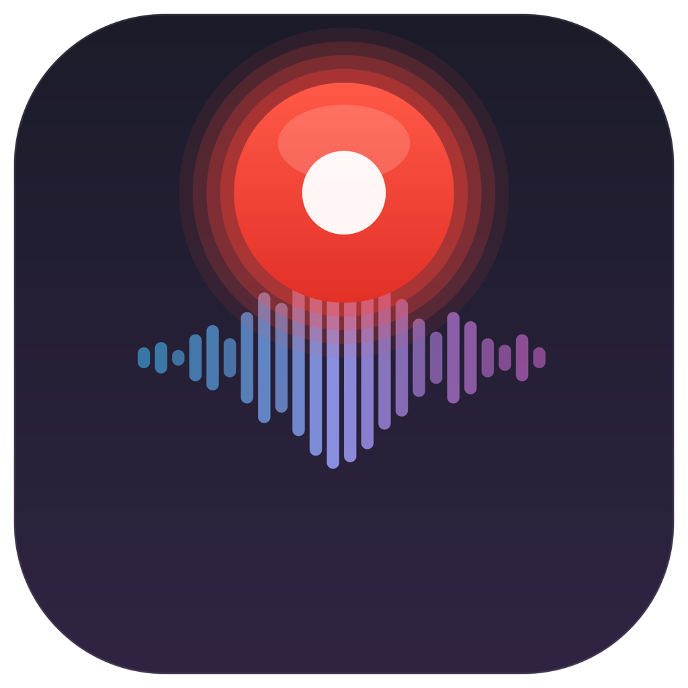
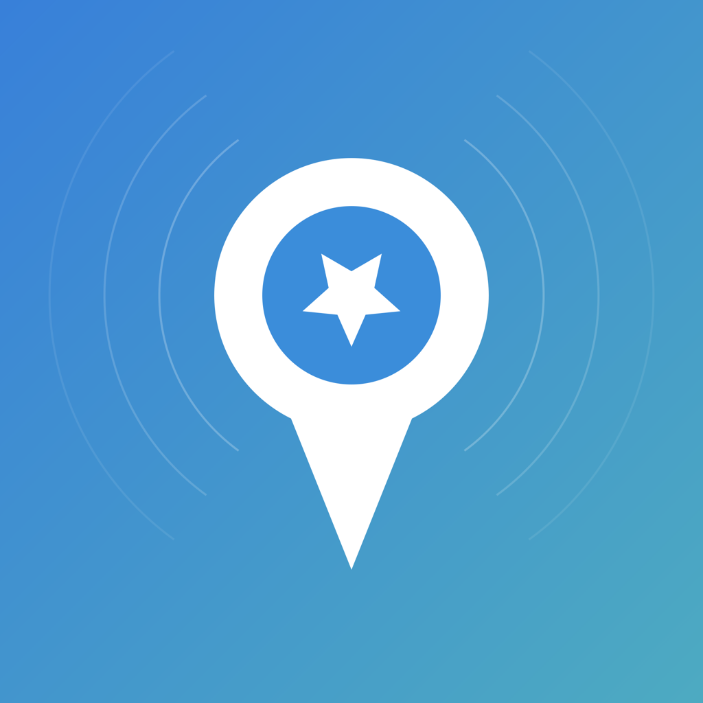
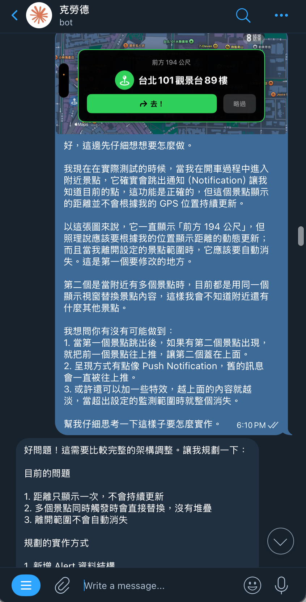
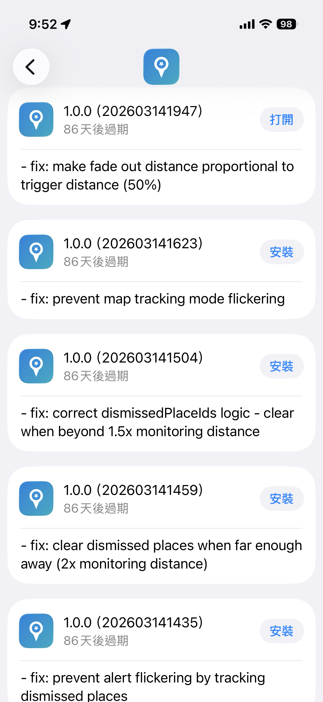

Dylan's AI 工作流
如何用 AI 放大產出
過去 14 天，我做了什麼？
五個專案，兩個禮拜

Easy RecordingmacOS AI 會議錄音助手
- 系統音 + 麥克風同步錄音
- 即時語音轉文字 (AssemblyAI)
- GPT-4.1 自動產生會議紀錄 & Action Items
- 錄音中可即時 AI 對話
- GitHub 同步筆記
BlaBlaFix
隱私優先的 On-Device 語音輸入法 — 複刻 Typeless
- 本機 WhisperKit 語音辨識
- MLX-Swift + Qwen2.5 本機潤稿
- 全程離線，資料不上傳
- 自訂快捷鍵 + 自動輸入到任何 App
- macOS 平台

NearbySpotㄟ，不要再忘記囉！
- Google Maps 網址自動解析座標
- 地理圍欄自訂距離提醒
- 駕駛模式 (全螢幕大字)
- 完整 CI/CD 與發佈到 TestFlight
NearbySpot 的初衷
你有多少餐廳，永遠只存在 Bucket List 裡？
每個人都遇過的情境
朋友推薦一間餐廳，你說「好好好」，然後存進 Google Map。但每次經過，你根本不會想起來。
好多年前就想要的 App
經過有興趣的地方時自動通知我，不會永遠只停留在 Bucket List。
沒人做？那就自己來！
既然沒人做，那就自己動手吧。

ezRental
AI 自動化租屋管理系統
- AI 自動回覆租客 (LINE / Email / Web)
- 自助預約看房 + Google Calendar 同步
- 多物件管理
- Q&A 自動學習知識庫
- 房東 CLI 管理工具
ezRental 的誕生
一個週末，一個岳母的煩惱
起因
岳母有間房子要出租，原租客說不租了。每次把資訊放上 591租屋網，就有一大堆人加 LINE 來亂聊天，光是喬看房時間跟回答問題就痛苦不堪。
兩個目標
① 不想花時間喬預約時間 ② LINE 上的問題要能自動回答
那就做一個吧
「我們是不是可以做個什麼？」— 於是在一個週末，ezRental 誕生了。
一做就欲罷不能
放房子照片
自動答客問
自助預約看房
自動學習
多物件
自動部署
響應式設計
一個週末，一半時間在陪小孩、處理家事
做完隔天，原租客說他要繼續租了
日常工作流
動口不動手
語音輸入
用 TypeLess、BlaBlaFix 直接口述，AI 幫你潤稿輸出
開車時間
ChatGPT Voice / Gemini Live 討論事情，Voice Memo 錄信件草稿
說話 120–160 WPM ｜ 打字 40–60 WPM
11公司雜事
寫信
- 專用 MyGPT：針對不同對象使用不同語氣
- 培養的特定人格寫信
Excel 地獄
- Cowork 處理報帳
- Cowork 處理 Timesheet
- Cowork 處理任何 Excel 的工作
投影片
- Claude Code 產投影片
會議領域
- Easy Recording
- Meeting Note / 會議記錄
- 即時線上AI會議問答
常用工具
Claude Code
本機開發主力，Terminal 多工開發流
OpenClaw (龍蝦)
最佳個人助手
NotebookLM
快速資料統整、最佳知識庫
Tip：醫療資訊管理
AI-Chat
Claude / Gemini / ChatGPT
開發工作流
多工並行
- 最多同時開發 4 個 Project
- 等A做B, 等B做C, 等C做A
- Terminal工具：CMUX
My Tips
- 先決定技術架構
- 先產生 Base Project
- 先設定 CI/CD
- 做完的事做成 Skill，下次直接用
- 善用worktree
平行修 Bug — BPM 專案實例
多個 Bug，同時修，互不干擾
GBPM-111
claude --worktree Bug-111🤖 Claude 自動建立環境
🤖 Claude 自動抓 Jira
🤖 自動寫 Code + 測試
等待驗證
GBPM-BBB-222
claude --worktree Bug-222🤖 Claude 自動建立環境
🤖 Claude 自動抓 Jira
🤖 自動寫 Code + 測試
等待驗證
龍蝦：隨時隨地叫 AI 做事
開車、洗澡、上廁所都能開發
龍蝦開發流 (NearbySpot 實例)
發現 Bug
傳給龍蝦
自動 Push
新 Build
驗證修復


龍蝦個人助理
遠端寫Code
隨時隨地指揮 AI 開發
個人助理
幫我記住事情、管理待辦事項
出差報帳助理
自動整理收據、產出報帳表
新聞播報 & Research
定期新聞摘要、深度研究
Shopping
比價、找商品、下單
旅遊旅行社
規劃行程、訂房比價、在地推薦
AI 使用進程
AI Chat
對話問答
AI Copilot
輔助協作
AI Agent
自主執行
AI Agent Team
多 Agent 協作
後遺症
像打電動
停不下來，越做越興奮
Token 焦慮
Token 沒用完好浪費，想把 Token 都用完
AI 不能閒
他閒我就焦慮
想法越多越累
想法越多，搞得自己越累
體悟 & 觀察
AI 是能力放大器
不是取代你，而是讓你的能力倍數放大
差距不是幾倍，是數十以上倍
會用 AI 跟不會用 AI 的產出差距已經明顯拉開
開發成本大幅降低
能更快速試錯調整，產出速度變關鍵
人是 Bottleneck
AI 的速度早就超過你，瓶頸是你自己
好好說話比什麼都重要
你怎麼跟”人“ & AI 溝通，決定了它能幫你多少
如何開始打造 Prototype
找一個你現在遇到的問題
或是一個你不停重複在做的事，直接做個 Prototype 解決它
不知道怎麼做？
問人，跟 AI 討論、用 DeepResearch 找方法，叫它給你最簡單的方法
推薦工具
Easy Google AI Studio (不用裝環境)
Medium Google AntiGravity、OpenAI Codex
Dev Claude Code
Dylan 碎碎念
不要等別人手把手教你
這非常危險，時間不等人
別人可以告訴你什麼好用
但你要自己下去玩
知道別人怎麼用 AI ≠ 你會用 AI
實作才是唯一的路
2026
是很關鍵的一年
拜 AI Agent 所賜
23謝謝大家
Go Build Something
Dylan
24